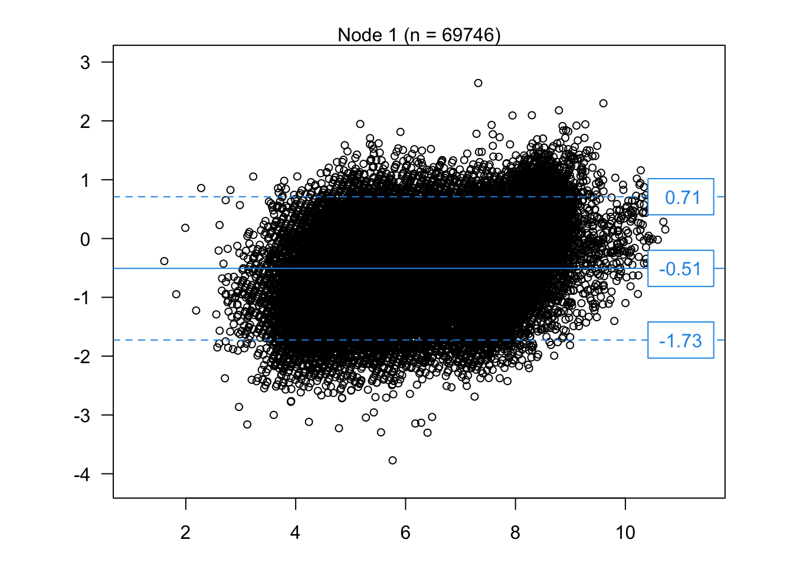
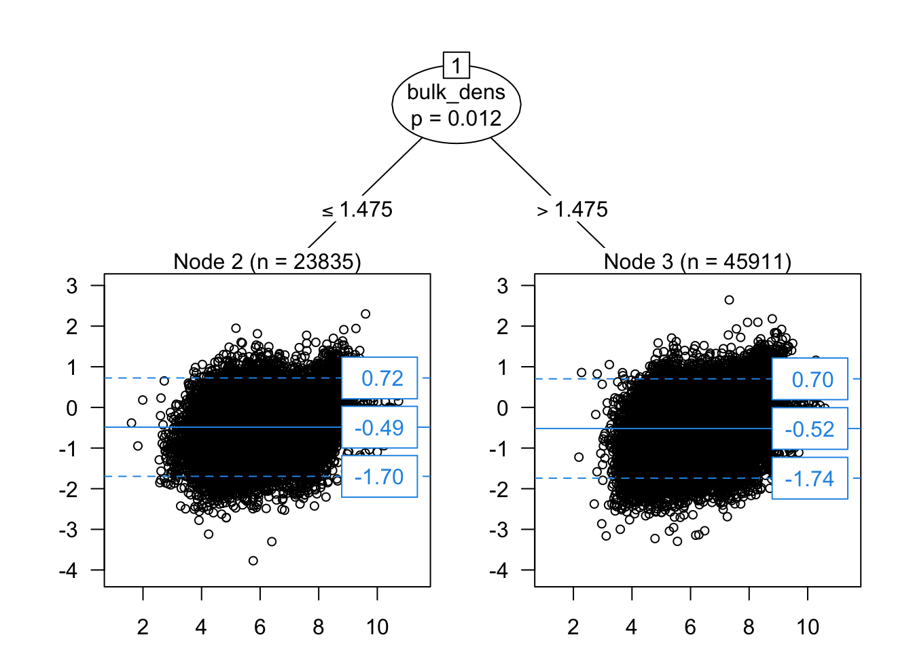

Hoofdstuk 6 Bland-Altman analyse
Bland-Altman (BA) analyse is een veelgebruikte techniek voor het vergelijken van twee methoden. Een BA-analyse geeft het verschil tussen twee gepaarde metingen (y-as) weer in functie van het gemiddelde van beide metingen (x-as). De uitkomst van de analyse is de bias (gemiddelde van het verschil tussen beide methoden) en de limits-of-agreement (LoA; 95% CI voor het verschil tussen beide methoden). Dit kan niet gebruikt worden voor transferfuncties (BA is geen model), maar kan puur descriptief wel interessant zijn. Een BA-analyse houdt ook geen rekening met meetfouten in de niet-referentiemethode. We gebruiken het R package coat (conditional method agreement trees) voor de analyse (Hapfelmeier et al., 2025; Karapetyan et al., 2025).
6.1 Zonder covariaten
We doen eerst een analyse zonder covariaten. De bias wordt geschat op 0.51 pH eenheden (pHH2O > pHCa) en de LoA geeft aan dat men kan verwachten dat de pHH2O ergens zal liggen tussen pHCa_obs - 1.73 en pHCa + 0.71.
library(coat)
# BA-analyse zonder covariaten (volledige dataset)
ba1 <- coat(pHCa_obs + pHH2O ~ 1, data = data_wosis_pH)
plot(ba1)
Figure 6.1: Bland-Altman plot van pH metingen met H2O en Ca.
6.2 Met covariaten
Het coat package laat ook toe om de bias en LoA in te schatten naargelang discrete en continue covariaten. Omwille van de grote sample size vindt het algoritme veel significante splits in de trees. Nadere inspectie van de bias en LoA in de verschillende splits, lijken dit weinig wetenschappelijk relevante verschillen. We verhogen daarom het minimum aantal observaties in een subgroep om een duidelijke figuur te maken. De analyse geeft aan dat de bias en LoA significant verschillen tussen bodems met bulk densiteit groter of kleiner dan 1.475 mg m\(^{-3}\) (dit verschil lijkt niet echt wetenschappelijk relevant aangezien de pH metingen slechts met 1 cijfer na de komma zijn gemeten).
# BA-analyse met covariaten (volledige dataset)
ba2 <- coat(pHCa_obs + pHH2O ~ bulk_dens,
type = "ctree", minsize = 2e4,
data = data_wosis_pH)
plot(ba2)
Figure 6.2: BA-analyse met tree split op basis van bulk densiteit.